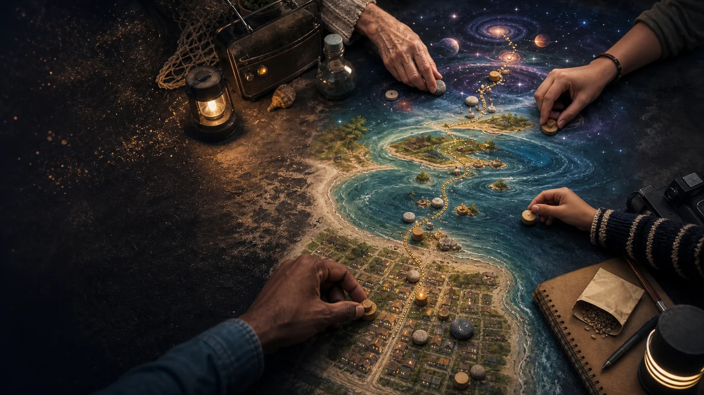

Own part of Sandworm
Explore worker and community ownership in the company developing the technology.
 Sandworm Subterranean SystemsMoreton Bay research & development
Sandworm Subterranean SystemsMoreton Bay research & developmentChapter 16 / 17 · Local ownership & wealth
If local infrastructure creates new businesses, jobs and profits, let's explore how residents and communities could share in the ownership.
When robots can dig tunnels, make blocks and look after infrastructure, who gets the benefit? Sandworm could be a way for locals to own part of the businesses and machinery, rather than just buying services from someone else.
That is the connection to Mutual Futures. Fair wages and local work still matter. So does owning a share of productive equipment and businesses as automation grows.

Explore worker and community ownership in the company developing the technology.
Communities could own a share of machinery, workshops, transport vehicles, energy or local infrastructure.
Save and reinvest an agreed share of actual returns for the next generation.
These are options for exploring, not agreed ownership percentages or an investment offer.
Straddie could have its own community sovereign wealth fund. Russell, Macleay, Lamb, Karragarra, Mulgumpin, Bribie, South Stradbroke and Coochiemudlo could choose their own arrangements or voluntarily invest together. Political boundaries don't have to dictate shared ownership.
Think of a future fund as a community savings and investment pool: put aside money for hard times, invest in useful assets, and decide together what the returns are used for. It needs clear rules and independent oversight.
| Possible structure | What it offers | What to resolve |
|---|---|---|
| Minjerribah fund | Locally accountable long-term investment and reserves | Community mandate, participation and relationship with Quandamooka rights holders |
| Individual SMBI funds | Russell, Macleay, Lamb and Karragarra can retain distinct decision rights and benefits | Scale, administration, local needs and equitable access |
| Mulgumpin, Bribie, South Stradbroke and Coochiemudlo | Island-specific ownership and future wealth arrangements, or voluntary participation in a shared fund | Local authority, actual communities, rights holders, asset ownership and consent |
| Shared SMBI fund | Pool capabilities and investment across the four islands while protecting local interests | Allocation rules, representation, dispute resolution and exit |
| Moreton Bay federation | Voluntary collaboration across Minjerribah, Mulgumpin, Bribie, South Stradbroke, Coochiemudlo, SMBI and all other participating islands | Shared technology investment, independent island projects and transparent accounting |
Moreton Bay Community Wealth and Mutuals wealth-fund chapter
Sell services and products.
Wages, maintenance, tax and suppliers.
Keep machinery and businesses working.
Allocate actual profits under agreed rules.
Revenue is not profit. Savings on public costs aren't automatically income. Work out what is earned, what goes to wages and local businesses, what gets reinvested, and what can safely be distributed.
| Value stage | Proposed treatment |
|---|---|
| Contract revenue | Meet delivery, materials, labour, energy, tax and operating obligations. |
| Retained business earnings | Protect working capital, research, safety, asset renewal and decommissioning. |
| Distributable returns | Pay approved ownership returns in accordance with the agreed capital structure and legal duties. |
| Community-owned share of returns | Allocate according to locally approved fund rules: reserves, protected future capital, reinvestment and current public benefit. |
| New productive capacity | Invest where justified in local skills, robotics, compute, manufacturing, energy, transport, care and further community assets. |
Quandamooka rights, consent and cultural authority are distinct from general community ownership. Relevant custodians decide whether to participate and how ownership, benefits, royalties, knowledge and stewardship should be handled. A regional fund cannot take those rights away.
Show who owns what, who votes, how decisions are made, where money goes and what risks remain. Keep personal and cultural information private. C-Hours can recognise voluntary contributions separately from wages, money and ownership.
Any real fund, public investment offer or company ownership structure needs proper legal, financial and accounting advice. No fund or share offer is being launched here.
Mutual Futures · Moreton Bay Community Wealth and Mutuals · Mutual Futures source repository · Local work and skills.
Mutual Futures · Moreton Bay Community Wealth and Mutuals · Community sovereign wealth funds · Mutual protection · ready SET Co-op · Sandworm cost workbench